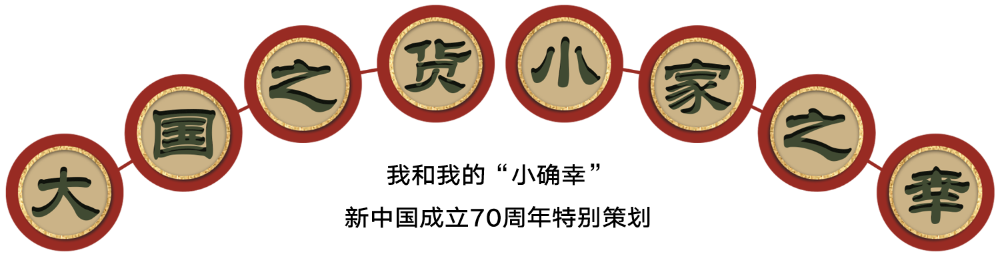
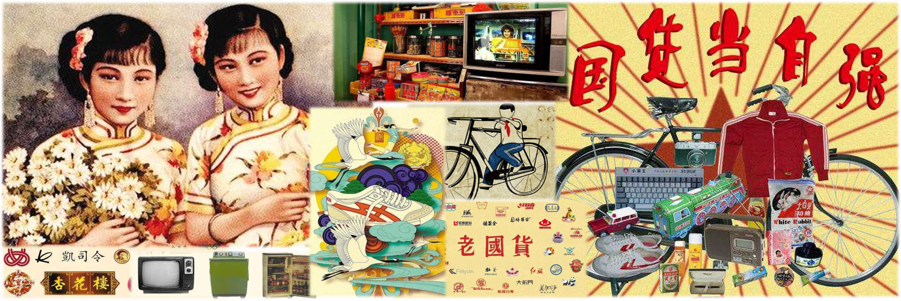
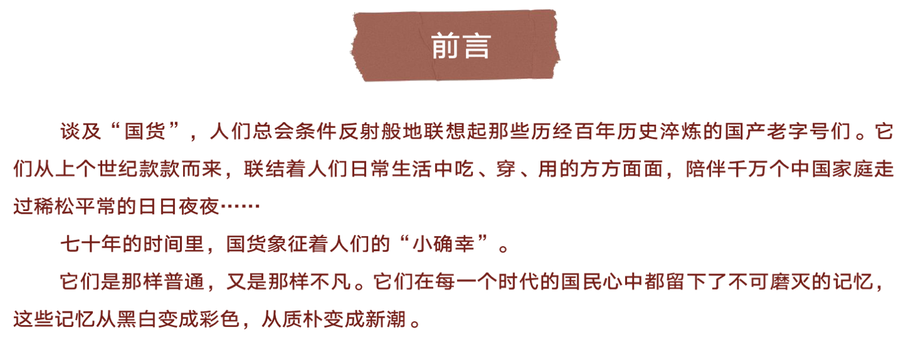
民国时期：“爱国的人民用国货”
十九世纪末二十世纪初，随着中国资本主义生产的发展以及西方经济思想的传入，人们逐渐认识到发展工业、兴办实业对于国民经济的重要意义，于是提出“以工立国”、“振兴实业”的思想。同时，为抵制外货倾销，挽回利权，早期民族资产阶级代表人物提倡国货的消费与生产，呼吁政府改革税制，保护和发展近代工商业，为国货工业的发展提供必要的外部环境，“国货”思潮初步形成。
就如民间作词人程文铮在《国货歌》里写到的，“爱国的人民，认定国货是瑰宝；无论饮食和服用，不是国货我不要；大家抱紧这颗心，始终都要用国货。”
那个时代，购用国货的行为被赋予了足够的崇高感。消费着国货的民众，也因成为爱国的“想象的共同体”成员，内心颇感幸福。
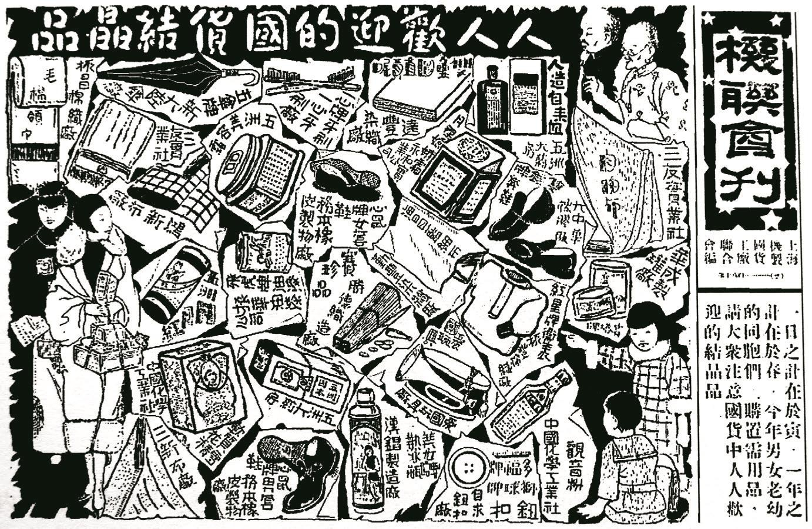
图：联会设计的国货精品荟萃广告（1929年）
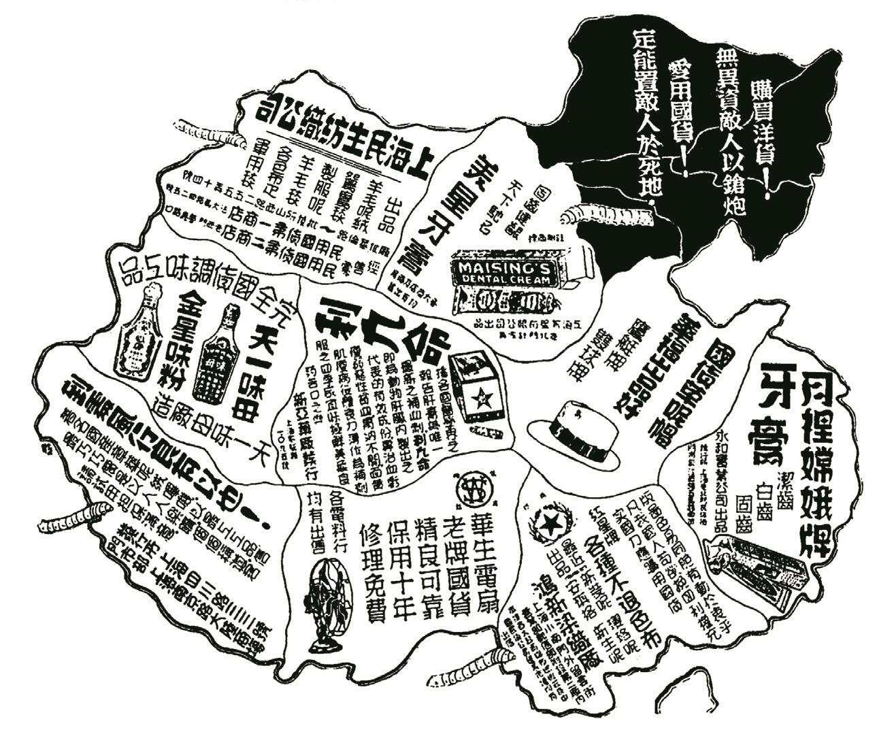
图：《申报》定期刊登的国货运动宣传广告（1930年代初）
建国后-改革开放时期：“物质贫乏时代里的时髦品”
1949年新中国成立后，中央制定了一系列经济恢复政策，建立了集中统一的管理体制，对不同经济成分进行了社会主义改造，同时开始向工业化迈进。在这样的大背景下，资本主义工商业和个体经济重获新生，一些人们耳熟能详的国货品牌开始崭露头角。时间来到七八十年代，改革开放的春风让中国的轻工业有了跨越式的发展，做工精湛的国货们也得以走入寻常百姓的家庭。
1979年10月14日《解放日报》的报道中，有这样一组数字：
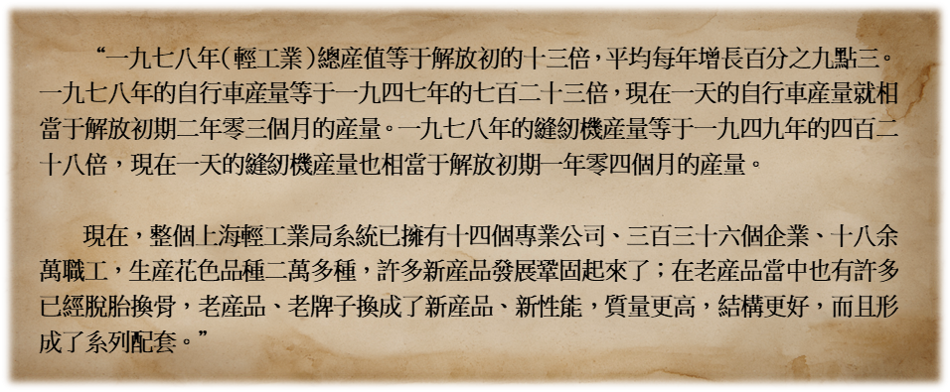
71岁的程细香老人介绍，那时市区的“东方红五金交电”商店是她的最爱。想起当时的场景，老人仍然兴奋得直摇头：“家里有了一张供应票，我就要去‘东方红’排队买东西。买过收音机、自行车，都是上海货。”
作为物质贫乏时代里的时髦品，“老国货”们制作精良，具有别样的民族特色，是特定社会背景下，劳动人民智慧和创造力的产物。大白兔奶糖、凤凰自行车、回力球鞋……无不承载着人们清晰而深刻的国民记忆。
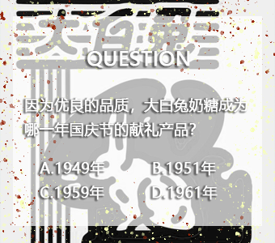
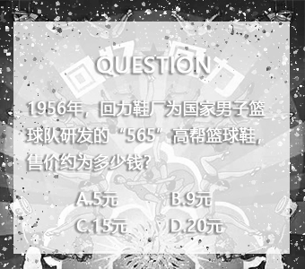
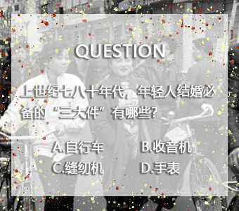
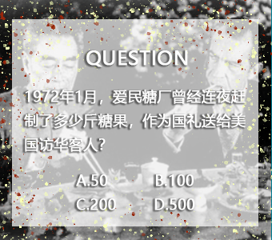
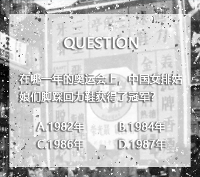
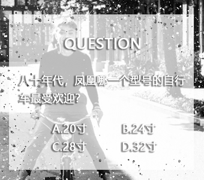
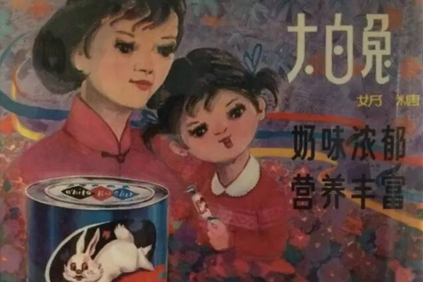
答案：C
1959年，大白兔奶糖成为建国十周年的献礼产品，至此它奠定了“国民奶糖”的地位。半个世纪后，大白兔奶糖于2005年成为大陆与台湾 50 年后首次直航的纪念糖果、2010年上海世博会的指定糖果，甚至在东南等地也颇受欢迎。大白兔巅峰时期，年销售高达146亿，远销50多个国家和地区，广受世界各地消费者青睐。
（点击右上角返回到主页）
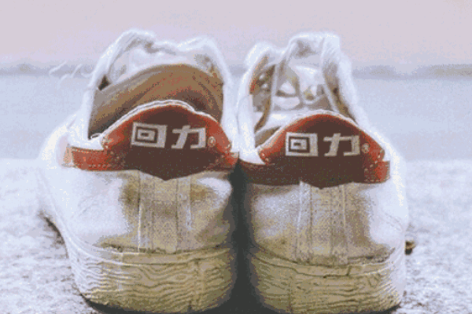
答案：B
在那个“满大街都是蓝蚂蚁”的时代，中国老百姓穿的胶鞋不仅牌子不多，而且款式单一，绝大多数中国人穿的都是“解放鞋”。时髦的“回力”鞋在这之中显得“鹤立鸡群”。1956年，回力鞋厂为国家男子篮球队研发的“565”高帮篮球鞋，惊艳一时，售价9元多，相当于当时普通工人半个多月的工资。
（点击右上角返回到主页）
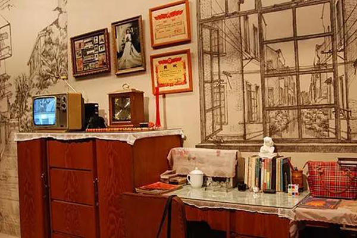
答案：ACD
上世纪七八十年代，自行车和缝纫机、手表一起，成了年轻人结婚必备的三大件。一辆自行车代表着一种“奢侈”的代步方式，它的地位不亚于如今的奔驰宝马。
在中国人的传统观念里，“凤凰”是吉祥和高贵的象征，因此，凤凰牌自行车也成了姑娘出嫁时一份很有面子的嫁妆。彼时，到上海采购凤凰自行车蔚然成风：由于整体经济环境复苏，加上人人都有大干快上的积极心态，象征着精致、耐用、价格又比较实惠的“上海制造”自行车队伍越来越大。
（点击右上角返回到主页）
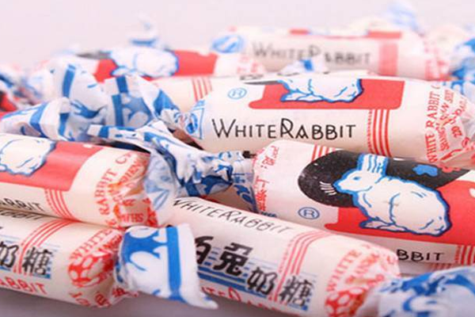
答案：D
小小的大白兔奶糖承担过一项特殊的外事任务。1972年1月，尼克松总统访华前夕，美国派出黑格准将带领的先遣队前往中国，为中美建交做准备。一次偶然，招待人员发现美方一行人对大白兔奶糖的偏爱，于是中方决定将其作为外交礼物。时任中国外交部翻译章含之回忆道，当时国内并无足够的现成糖果，毛主席指示下达之际已是半夜。上海接到通知后连夜召集糖厂工人，终于在第二天正午之前赶制出500余斤糖果，送给了当时访华的美国客人。
（点击右上角返回到主页）
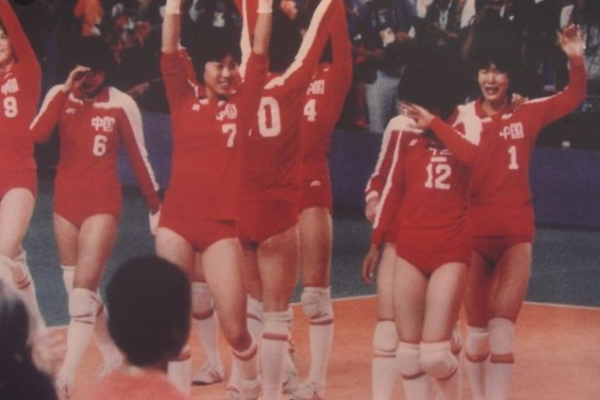
答案：B
1984年，中国女排就是穿着回力篮球鞋在洛杉矶奥运会上战胜了强队美国队，实现了历史上著名的三连冠，回力名声大噪，顿时成为了国民心目中的时尚潮牌。
（点击右上角返回到主页）
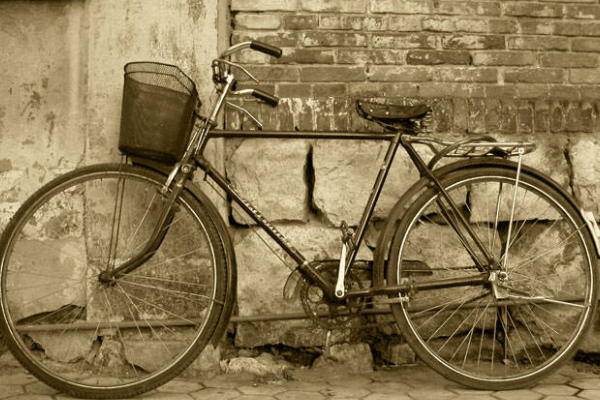
答案：C
1980年9月14日，在开展全国第三次“质量月”活动中，凤凰牌28吋PA18型自行车获市级优质产品证书和奖励，并同26吋轻便车一起首次进入欧洲市场，成为我国首个进入欧美市场的自行车品牌。
（点击右上角返回到主页）
市场化新时期：“国潮复兴”
上个世纪的国民品牌多以“食”、“用”为其主导功能，“穿着”品牌的占比较小。在那个“满大街都是蓝蚂蚁”的时代，人们追求实用主义与极简精神，备受追捧的国货多少都带有质优、物美、价廉的特征。时代的浪潮中，部分国货如“百雀羚”历久弥新、仍在经营，但其余多数已经破产改制，或因经营不善，市场份额大幅度缩减。
20世纪90年代，随着改革开放的深入，大量国外品牌、企业和产品的流入及新技术产品的开发，不断挑动消费者的视觉神经和购买欲，加上国有企业在生产技术、管理和产品营销等方面的落伍，导致在商品经济的大浪淘沙中，诸多老品牌面临生存困境，开始衰落和逐步淡出大众视野。
注：5星代表品牌建立于50年代，4星代表品牌建立于40年代，3星代表品牌建立于30年代及以前
数据来源：品牌信息搜集
但沉寂不意味着消亡。三十年后，在互联网高速运转、消费升级、营销模式花样百出的今天，人们欣喜地发现，在不知不觉间，“国货”们已经摇身一变，以一种“潮酷”的方式掀起了21世纪的新一轮“国货运动”。不论是充满了想象力的老字号跨界混搭，还是新生代国潮的出海突围，人们发自内心地为国产品牌感到骄傲和“确幸”。
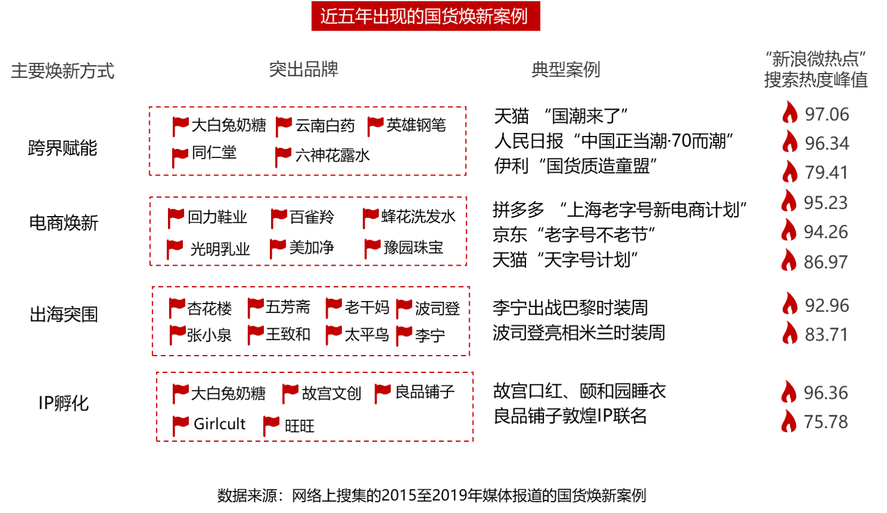
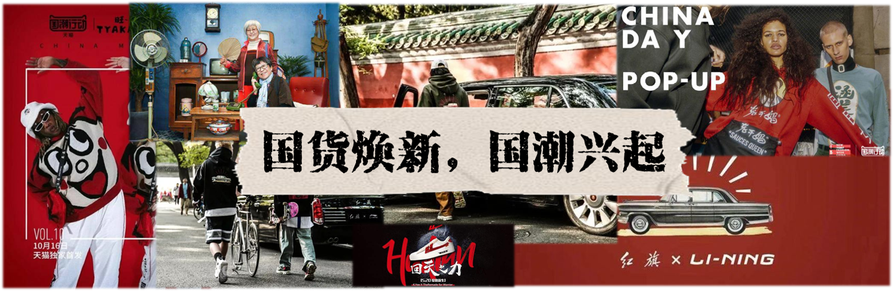
国货热现状：“我眼中的‘国货之光’”
思懿是中山大学的一名大学生。
最近她发现，身边同学都在讨论一个词“国潮”。
从她室友的大白兔味的香水，到手里的华为手机。
国货正在逐渐占领年轻大学生的日常生活，成为他们彰显时尚的潮流符号。
“国潮”是目前最流行的潮流动向。所谓“国潮”，是最近“国货”加“潮流”的合成衍生热词。现在的国货现在有多火？610元的大白兔联名帆布包瞬间售罄，故宫彩妆在网上好评如潮……大家越来越崇尚买国货、用国货、在网上晒国货。
据百度和人民网联名发布的《百度国潮骄傲大数据》显示，相较2009年，2019年中国品牌关注度从38%跃升至70%，实现了对境外品牌的反超。国货正在以蓬勃之势迅速占领市场。
人们不仅仅关注国货，更从行动中体现出对国货的支持。据阿里研究院《2019中国消费品牌发展报告·新国货 大未来》的数据显示，2018年阿里巴巴零售平台中国消费品牌市场占有率71%。线上高端市场中国消费品牌市场占有率同比2018年提升2.2个百分点。同时在阿里巴巴平台上，2018年与中国元素相关的关键字累计搜索量超过126亿次。2018年淘宝消费者人均购买非遗、老字号商品超过2件，其中80、90后消费者占比超过7成。
出海潮牌——我的酷，我的小确幸
以李宁、波司登、回力为首的国产品牌正在年轻人之中刮起一股“国潮”的旋风。它们用瑰丽的想象和敢于打破次元壁的创新精神，将“万物皆可联名”的口号贯彻到底。于是，“人民日报”和“西瓜霜”被穿在潮酷青年们身上，他们用独特的服饰昭告自我个性的宣言，展现对“国民元素”的自豪与喜爱。
然而，新国货们的“野心”远不止于此。他们开始“出海突围”，将中国元素播撒到世界的其他角落。李宁在巴黎时装周的惊艳亮相，让不同肤色、不同语言的人们也感受到了这股来自东方的“神秘力量”。
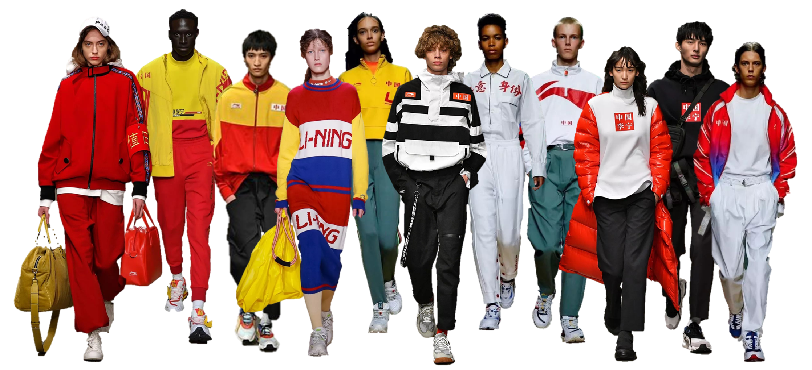
国货美妆——我的美，我的小确幸
爱美之心，人皆有之。中国文化的传统风格、来自上个世纪的文化元素，这些仿佛与现代潮流格格不入的设计符号却能通过重新设计融入到我们的潮流风格中，被广大年轻消费者奉为最爱的时尚。
以故宫文创联名发布的口红为例，口红作为西方文化的代表产物，在融合故宫文化元素后则带有东方神韵，成为一件彰显个性的独特象征。据统计，故宫彩妆销售额已超10亿，广受消费者好评。据官网介绍，每款口红的外观灵感和颜色都源自一件宫妃衣裳或故宫馆藏文物。枫叶红、豆沙红、玫紫色等颜色；瑞鹿、蜜水仙团寿纹、地景百花纹等吉祥图案无一不彰显传统文化的独特魅力。精美的设计和配色让不少女孩子爱不释手，拥有一件独特的有着浓浓中国风的口红就是生活中的小确幸。
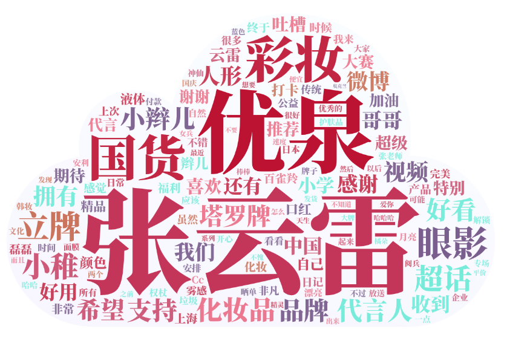
以上两份数据来源：以“国货”关键词，对微博近三个月最新发布内容（596条）分别进行词频分析与情感分析
据微博近三个月以“国货”为关键词的词频分析及情感分析显示，大家对以张云雷为形象大使的稚优泉美妆、口红、眼影的国产化妆品最为关心。其中，高达93%的消费者对国货美妆有积极性的评价。生活中的幸福，也许就在于拥有好用，更好看，一件彰显自己个性的国产彩妆。“稚优泉真的好抢手呀看到实物真的超乎我的想象真的好好看，太好用了！不愧是国货之光！！好看好美好漂亮！”女孩Anny（化名）在收到包裹后第一时间在微博发出动态。
为何国货能在年轻人中掀起热潮？
国货热的兴起，首先离不开的是国家硬实力的增长。制造业的稳步增长，技术实力的迅速上升，创新投入的巨大投入，都是国货发展的巨大动力。相较美国等国家相比，中国制造业近些年的迅速增长便是国货崛起最大的保证。
此外，我国近年来在创新研究领域的持续投入也是国货能够迅速发展的重要支持力量。我国的企业研发投入占全社会研发投入比重超过70%，规模以上工业企业中，超过四成开展创新活动。
打铁还需自身硬。硬国货热的兴起，还需要国货自身的锐意进取。近年来，国货不断调整自身发展战略，积极把握时代机遇，充分利用传统文化志愿，提升产品品质与设计格调，终于用行动成功撕下了“老土”“劣质”的标签。
国货热的兴起，同样需要国人消费能力的提升。改革开放以来，我国居民收入不断上升，生活水平和消费能力已经有了翻天覆地的进步。消费人群的构成结构也在悄然发生变化，20-29岁的90后成为国货最为忠实的粉丝。更年轻的消费群体，意味着他们更乐意去接受新兴事物，更加不容易受过去国产品牌“低廉”、“劣质”的刻板印象的影响。我国居民不仅有意愿，而且更有能力去支持国产的潮牌。
国货热背后的文化自信和潮流新动向
国货品牌正在被越来越多的年轻人所和认同，成为越来越多年轻人心目中的“小确幸”。用上国货，成为他们彰显自身个性，享受美好生活的象征。一方面，国货老品牌因为“老”而不同于现代社会的“新”，相对于“新”，“老”反而是更为独特的、有个性的。在产品高度同质化，崇尚快消品的现代社会，大量雷同的所谓快消品导致了受众审美疲劳。年轻一代消费者将个性的、另类的东西作为时尚潮流，国货潮的出现真好迎合了年轻一代消费者的心理。
国货为什么是年轻人心目中的“小确幸”？这还是传统文化元素的再创新和文化自信的必然结果。新国货创新性的利用传统的文化元素，结合时下流行的表现形式，将怀旧与创新结合。这种主打情怀的营销方式很好的激发了年轻人之中特殊的怀旧情怀。老国货作为蕴含一个时代文化内涵的民族传统文化的载体，虽然部分被时代所淘汰，但依旧是国人民族认同，文化认同的重要形式。国货老品牌通过网络营销和全新形式的出现，很好营造了受众感知民族文化和民族精神的氛围，进一步唤醒了年轻人新中国隐含的民族文化认同感，自然倍受青年们欢迎。
新一代国货相较之前外国产品拥有更为出色的性能和质量表现，让更多年轻消费者以更低廉的价格享受到更优质的产品。由此更加激发了消费者的民族自豪感和民族认同，自然使国货成为年轻人心目中“小确幸”的完美体现。
国货热之后，我们应该怎么继续走？
国货在当今已经取得的巨大成就，不应该成为我们骄傲自满的资本。冷静反思，国货应该如何进一步取得更大的成绩？2019年，《政府工作报告》明确提出，我国要强化质量基础支撑，推动标准与国际先进水平对接，提升产品和服务品质，让更多国内外用户选择中国制造、中国服务。个人标签为“国货爱好者”的大四学生张雅（化名）表示，继续创新、提升质量是国货持久发展的取胜之道。真正的新国货，不仅要做到文化自信，更加要做到提质提价的同时进行。
中国青年报社社会调查中心联合问卷网的调查中，59.1%的受访者建议老字号跨界发展时多注重产品质量，不盲目追求一时热度，56.8%的受访者建议老字号多做产品创新，推出新的产品，55.6%的受访者建议老字号改进经营管理方式，改变僵化的模式。
振兴国货，国家也在行动。中国品牌日，老字号发展计划等一系列行动的开展，彰显了国家进一步发展的决心。
-
商务部发布《关于保护和促进老字号发展的若干意见》，我国鼓励老字号企业开展资本运作，支持符合条件的企业上市。
-
国务院批准将每年5月10日设立为中国品牌日。
-
发改委等七部委正式对外发布中国品牌日标识。
-
商务部、国家邮政局、中国消费者协会组织指导“双品网购节”系列活动，全面促进品牌消费与品质消费。
振兴国货，还需要网购平台和国货品牌多方合作。近年来，天猫、京东都先后和国货品牌开展多方面合作，如通过天猫“国潮来了”主题销售活动、京东国货海外全球售平台等。产品发力，平台联动，强强联手，推动国货不仅火爆国内，更畅销海外。
早在2017年，天猫便针对中国品牌的营销升级推出了“国品计划”，并在2019年将新国货计划作为今年战略布局中重要的增长领域。
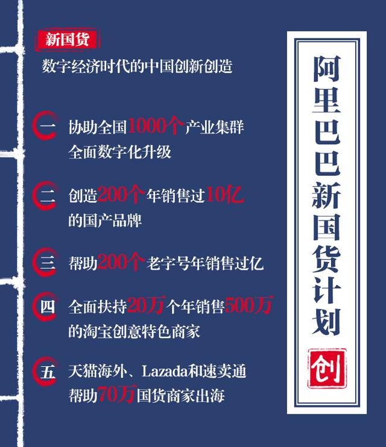
根据《2019中国品牌出海50强》的数据显示，中国出海品牌今年的品牌力整体增长迅猛。继2018年度增长 5% 之后，本年度品牌力增长高达15%。中国品牌的发展不仅需要打动国内消费者，更需要积极走出去，打动国外消费者。在国家一带一路战略的背景下，努力让中国品牌走出去，让世界爱上中国智造是重要策略。
时光更迭间，“国货”们承载着一个又一个时代的国民记忆。
它们或简约质朴，或潮酷有型，变的是风格与款式，不变的是功能价值背后蕴含的精神价值。
这些散落在生活各个角落的“小物件”，是令人感到“小确幸”的符号；千千万万个“小确幸”汇聚在一起，又映射了百余年来中国经历的“大时代”变迁。
❤ 策划&制作：胡麟薇、黄盈佳、廖朗星
❤ 文本&数据：黄盈佳、廖朗星
❤ 前端&设计：胡麟薇
❤ 参考资料：中国青年报社社会调查中心，周丽娜. 基于受众视角的国货老品牌回归现象探究[D].湖南师范大学,2015.
❤ 数据来源：世界银行官网、国家统计局、工业及信息化部官网、《百度国潮骄傲大数据》、
《2019中国消费品牌发展报告·新国货 大未来》、品牌官方信息
❤ 图片来源：品牌官方报道、新闻报刊、网络收集